Mixture of Experts
Large Language Models : A Hands-on Approach
Overview
- Scaling Laws
- MoE Architecture
- What do MoEs look like in LLMs?
- Dense vs Sparse MoE
- Routing Mechanisms
- Expert Configuration
- DeepSeek V3 MoE Architecture
- Model Examples
Scaling to Larger Models

- Train larger models over more data => better results
Power Law
\(y = a \cdot x^p + c\)
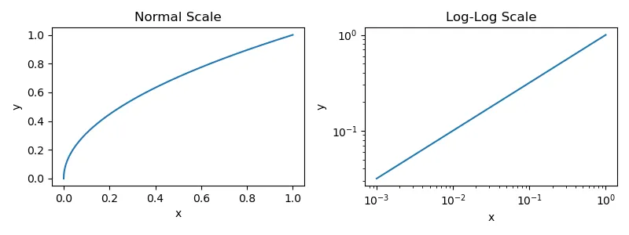
Scaling Laws for Neural Language Models
- The loss scales as a power-law with model size, dataset size, and the amount of compute used for training
- Scaling laws make training larger models more predictable and efficient
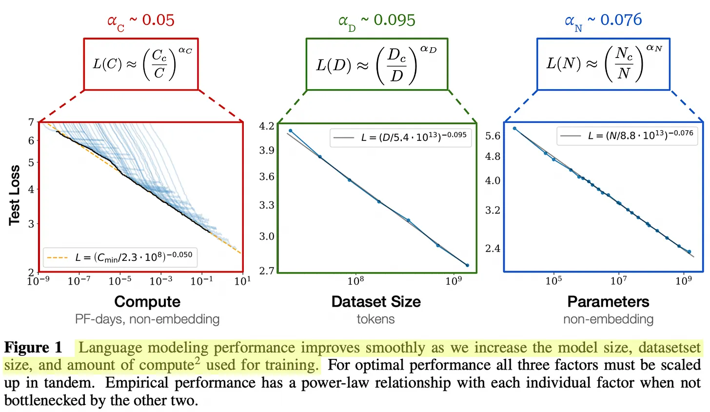
Scaling Laws for Neural Language Models
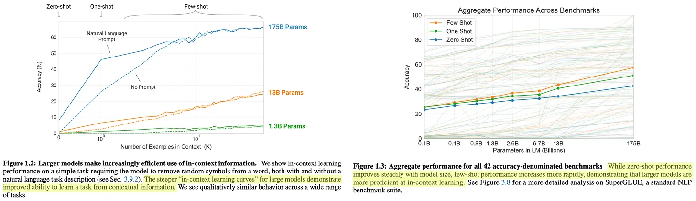
Training Compute-Optimal Models
- How much data to train on for a given model size?
- Large models need to be trained over more data to reach their best performance
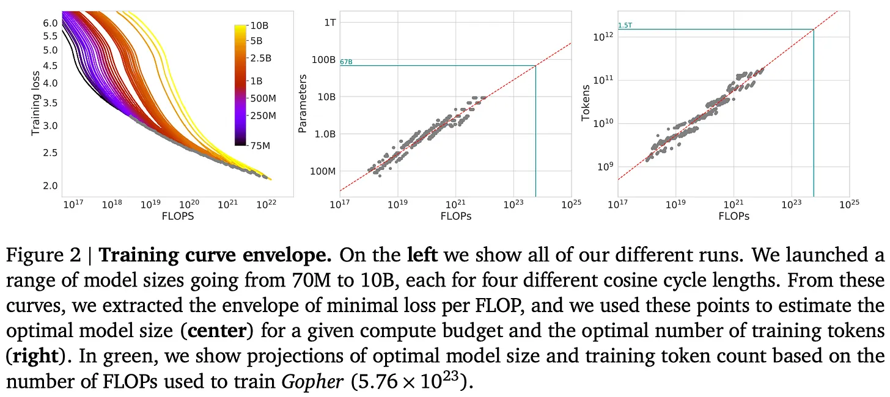
For compute-optimal training: \(D \approx 20 \times N\)
Emergent Abilities
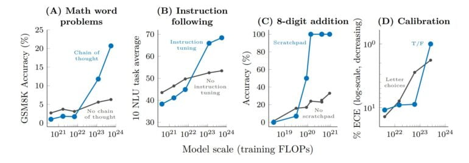
| Ability | Emerges Around |
|---|---|
| In-context learning | 10B+ params |
| Chain-of-thought reasoning | 100B+ params |
| Arithmetic | 10B+ params |
| Code generation | 10B+ params |
| Truthful QA improvement | 100B+ params |
Decoder-only LLMs: Parmeter Distribution
- Decoder-only is the predominant architecture for LLMs
- Core components
- Self-attention
- Feedforward Network (FFN) / MLP
- LayerNorm and residual connections
- Most parameters are in the FFN layers
- Attention: 4d^2 weights, FFN has about 8d^2
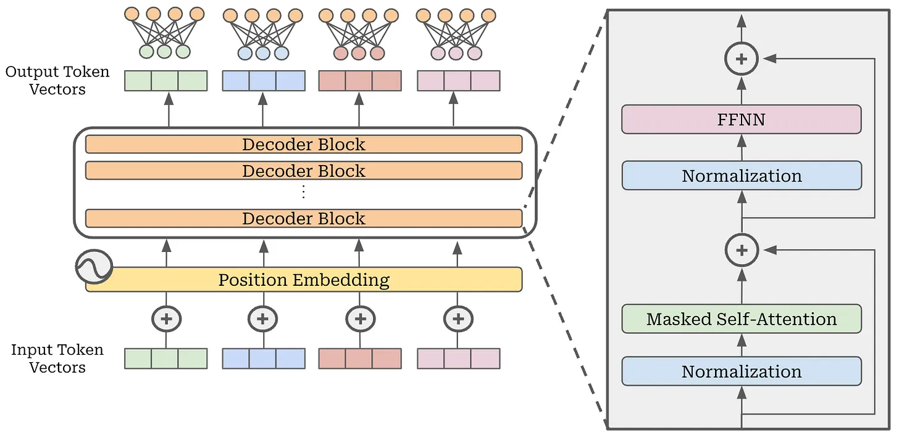
Decoder-only LLMs : Flops Distribution
- Most parameters are in the FFN layers
- The FFN layers are the main bottleneck for scaling up model capacity
- FFN parameters scale as ~8*d_model^2, leading to quadratic growth in parameters and compute
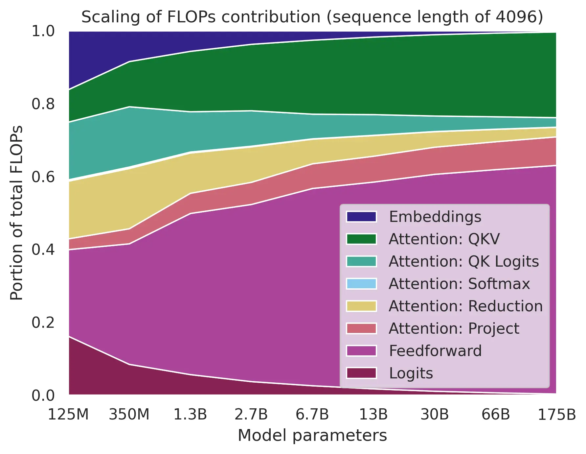
MoE Architecture
- Replace big FFN with multiple smaller FFNs (experts)
- Only a subset of experts are active for each input token
- Routing mechanism decides which experts to activate
- Increase parameters without increasing compute
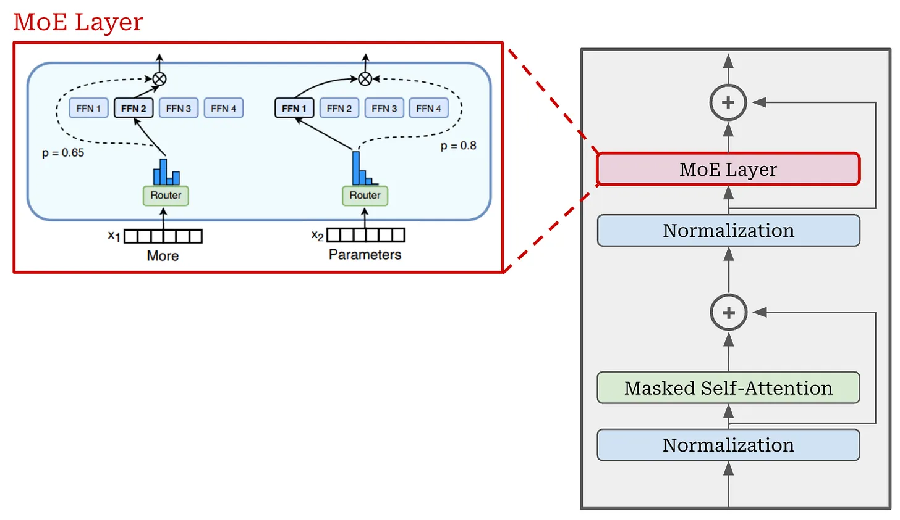
Current Trends in SoTA Architectures
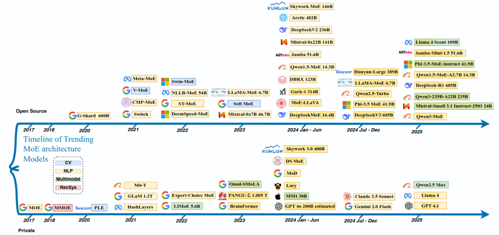
- Since 2024 nearly every frontier model (GPT-4, Grok, Mixtral, DeepSeek, Qwen, Llama 4) is an MoE
MoE Architecture
- All layers can be MoE
- Some layers (e.g., every 2nd layer) can be MoE in an interleaved fashion.
def moe_layer(token, experts, router, k):
# Ask the router "which experts should handle this token?"
logits = router(token)
# With N total experts, pick only top_k (top_k << N)
top_k_logits, top_k_experts = top_k(logits, k)
# Compute experts' mixing weights
weights = softmax(top_k_logits)
# Mix only top_k experts together to provide the final output
output = 0
for i, expert_idx in enumerate(top_k_experts):
output += weights[i] * experts[expert_idx](token)
return output Why are MoEs getting popular?
- Efficient Scaling: Add model capacity (total parameters) without increasing active parameters (compute) significantly
- Efficient Pretraining and Inference - Faster training and inference compared to dense models of similar capacity
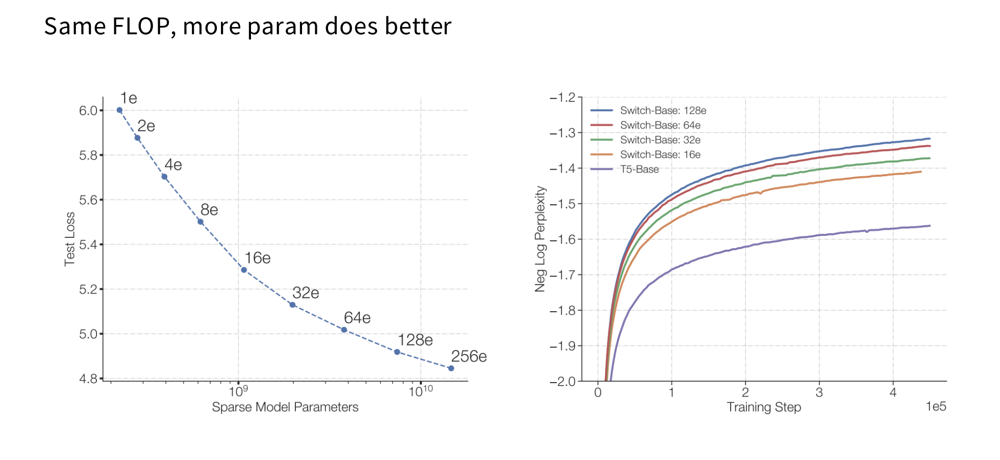
Why are MoEs getting popular?
- Improved Performance: Better performance on many tasks by leveraging specialization and ensemble effects
- DeepSeek V2 236B MoE with 21B active parameters outperforms dense models with 100B+ parameters
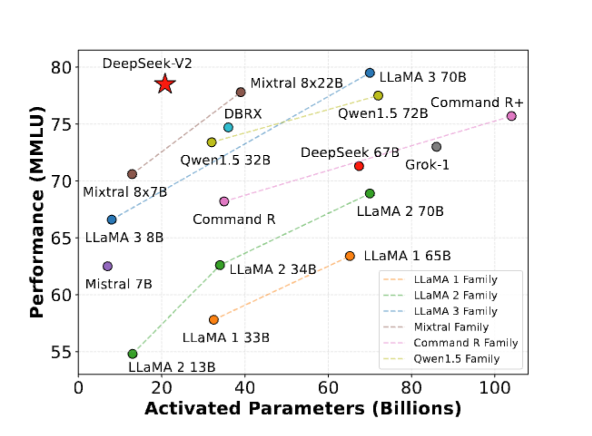
MoE Architectures
Three things vary across MoE architectures:
- Routing function - how tokens get assigned to experts
- Expert sizes - how many experts, how large each one is, shared vs routed
- Training objectives - how to train the router and keep experts balanced
Routing Mechanisms
Learned:
- Token choice top K : each token picks its top-K experts
- Expert choice top K : each expert picks its top-K tokens
- Global assignment (e.g., BASE layers) : a global assignment of tokens to experts, fixed across batches
Non-learned: - Hash-based routing : expert fixed by hashing the token id
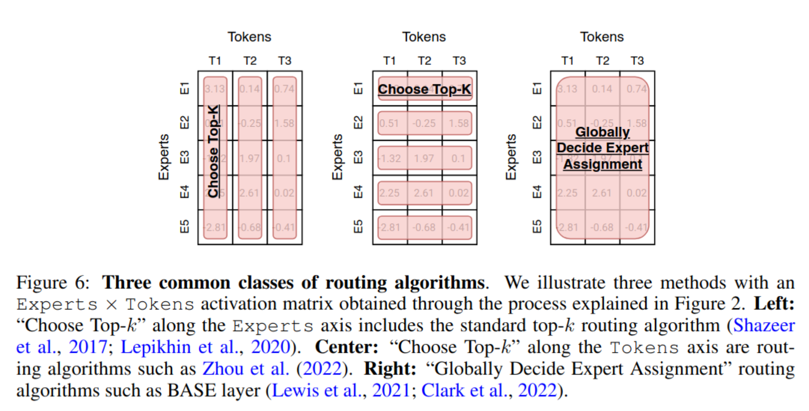
Top-K routing in detail
1. Compute Gating Scores (e.g., dot product)
\[s_{i,t} = \text{Softmax}_i\left(\mathbf{u}_t^{lT} \mathbf{e}_i^l\right)\]
- \(\mathbf{u}_t^l\) : input token representation at layer \(l\)
- \(\mathbf{e}_i^l\) : expert embedding for expert \(i\) at layer \(l\)
2. Select Top-K Experts
\[g_{i,t} = \begin{cases} s_{i,t}, & s_{i,t} \in \text{Topk}(\{s_{j,t} \mid 1 \leq j \leq N\},\, K) \\ 0, & \text{otherwise} \end{cases}\]
3. Compute Mixed Output
\[ \mathbf{h}_t = \sum_{i=1}^{N} g_{i,t} \cdot \text{FFN}_i(\mathbf{u}_t) + \mathbf{u}_t \]
where \(\text{FFN}_i\) is the feedforward network for expert \(i\)
def moe_layer(token, experts, router, k):
# ── Step 1: Compute gating scores ──────────────────────
# s_{i,t} = Softmax_i( u_t^T e_i )
# router is nn.Linear(d_model, N) → token @ W_router
# "e_i": a learned embedding vector, one per expert, stored in the router's weight matrix W_router
logits = router(token) # shape: [N]
scores = softmax(logits) # s_{i,t} for all i
# ── Step 2: Select top-K experts ───────────────────────
# g_{i,t} = s_{i,t} if i in TopK, else 0
top_k_scores, top_k_idx = top_k(scores, k)
# all other g_{i,t} are implicitly 0
# ── Step 3: Compute mixed output ───────────────────────
# h_t = Σ g_{i,t} · FFN_i(u_t) + u_t (residual)
output = 0
for rank, expert_idx in enumerate(top_k_idx):
output += top_k_scores[rank] * experts[expert_idx](token)
return output # + residual added outsideTop-K routing in more detail
Why not just softmax without top-K?
- You immediately lose the systems efficiency
- Without top-K, you pay the training cost of all N experts per token
- The whole point of MoE is sparse activation during both training and inference
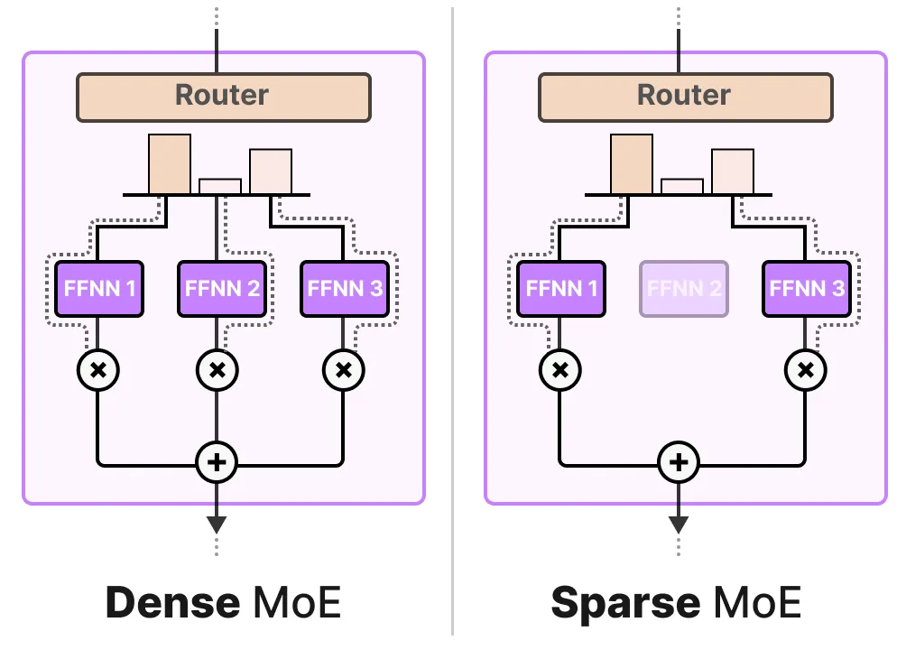
Router Collapse
The Problem
- Gating network routes tokens to only a small subset of experts
- Leaves most experts underutilized or completely inactive
- The “Rich-get-richer” effect: Specialized experts attract more tokens => get more gradients => become better => attract even more tokens
- Degenerate policy: Router learns \(s_{i,t} \approx 0\) for most experts
\[\text{Effective capacity} \ll N \times \text{expert size}\]
Consequences
- Wasted memory: Unused experts consume GPU memory but add no value
- Reduced model quality: Equivalent to training a much smaller dense model
- Poor generalization: Active experts become overloaded and overfit
Mitigating Router Collapse
Strategies
- Auxiliary Balancing Loss: Penalize uneven distribution (e.g., \(F \cdot P\) loss)
- Expert Capacity: Limit the number of tokens an expert can process per batch
- Random Noise: Add noise to router logits to encourage exploration
- Expert Choice: Experts pick tokens (rather than tokens picking experts)
Current consensus: Auxiliary balancing loss and expert capacity are the most effective and widely used solutions in practice.
Expert Configuration
Fine-Grained Experts
- Make experts smaller and use more of them.
- Instead of \(N\) full-sized FFN copies, make each expert much smaller (1/4 to 1/14 of standard FFN size)
The fine-grained ratio = (expert intermediate dim) / (standard FFN intermediate dim)
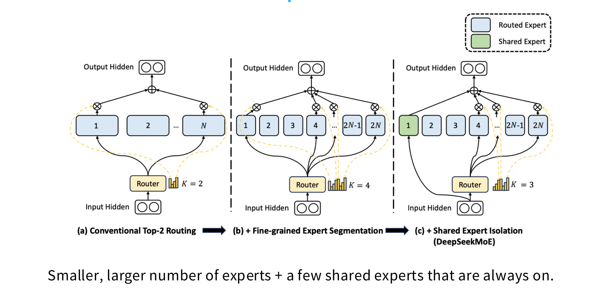
Expert Configuration
Shared Experts
- One or more experts that process all tokens regardless of routing
- Shared experts provide a common processing pathway for all tokens, ensuring that every token benefits from some shared knowledge.
- Routed experts can specialize on different subsets of tokens. This hybrid approach can improve performance and stability.
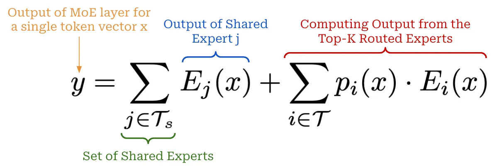
Expert Configuration
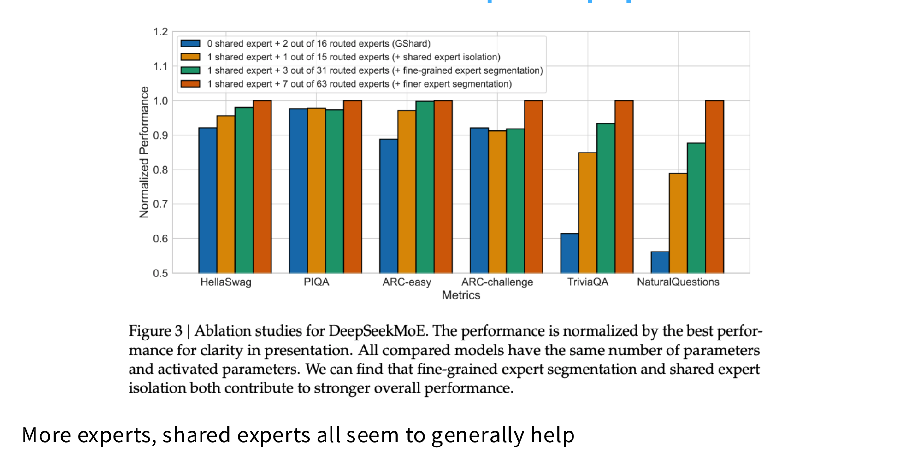
Expert Routing Configurations for Major MoEs
| Model | Experts | Active | Shared | Fine-grained ratio |
|---|---|---|---|---|
| GShard | 2048 | 2 | 0 | – |
| Switch Transformer | 64 | 1 | 0 | – |
| Mixtral | 8 | 2 | 0 | – |
| DBRX | 16 | 4 | 0 | – |
| Grok | 8 | 2 | 0 | – |
| DeepSeek V1 | 64 | 6 | 2 | 1/4 |
| Qwen 1.5 | 60 | 4 | 4 | 1/8 |
| DeepSeek V3 | 256 | 8 | 1 | 1/14 |
| OLMoE | 64 | 8 | 0 | 1/8 |
| MiniMax | 32 | 2 | 0 | ~1/4 |
| Llama 4 (Maverick) | 128 | 1 | 1 | 1/2 |
Training MoEs
The Core Challenge
- Sparsity vs. Differentiability: We need sparsity for training-time efficiency.
- Problem: Sparse gating decision (top-K selection) is not differentiable.
- Gradient descent cannot directly optimize the discrete “choice” of an expert.
The Efficiency Trade-off
- Activating all experts simplifies gradients but destroys compute efficiency.
- FLOPs Cost: “Having a model that’s 256 times more expensive to train is a total no-go.”
- Goal: Maintain sparse execution while ensuring the routing mechanism can still be trained effectively.
Heuristic Balancing Losses
Switch Transformer F*P Loss (Standard)
where:
- \(f_i = \frac{1}{T} \sum_{x \in \mathcal{B}} \mathbb{1}\{\text{argmax } p(x) = i\}\) is the fraction of tokens dispatched to expert \(i\)
- \(P_i = \frac{1}{T} \sum_{x \in \mathcal{B}} p_i(x)\) is the mean router probability for expert \(i\)
- \(\alpha\) is the balancing coefficient
- \(N\) is the number of experts
- \(T\) is the number of tokens in batch \(\mathcal{B}\)
Total Loss = \(\mathcal{L}_{\text{LM}} + \alpha \cdot F \cdot P\)
Expert Capacity
Hardware Efficiency vs. Dynamic Routing
Expert Capacity: The maximum number of tokens assigned to each expert per batch.
\[ \text{Expert Capacity} = \frac{\text{Tokens per Batch}}{\text{Number of Experts}} \times \text{Capacity Factor} \]
Handling Overflow (Dropped Tokens)
- Token Dropping: Occurs when the number of tokens routed to an expert exceeds its capacity.
- Residual Bypass: Dropped tokens skip expert computation and flow directly through the residual connection to the next layer.
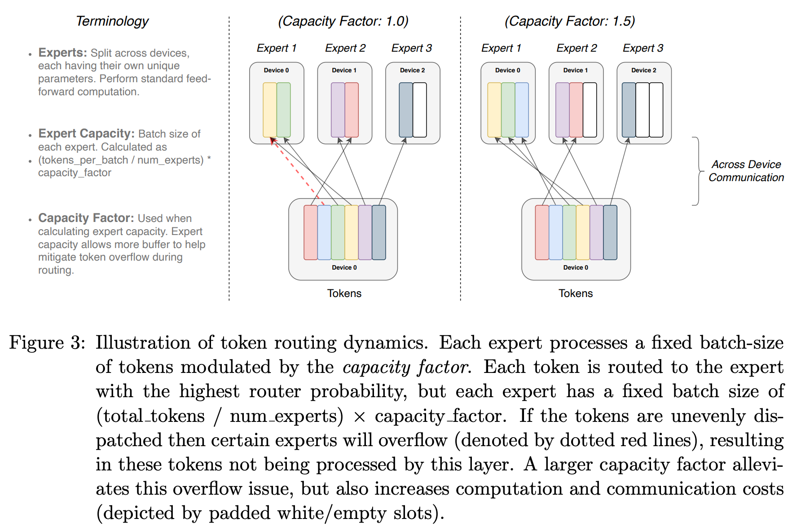
Computing output of MoE layer
- For each selected expert, compute the output for the assigned tokens
- Combine the outputs from the selected experts (e.g., weighted sum) and add the residual connection
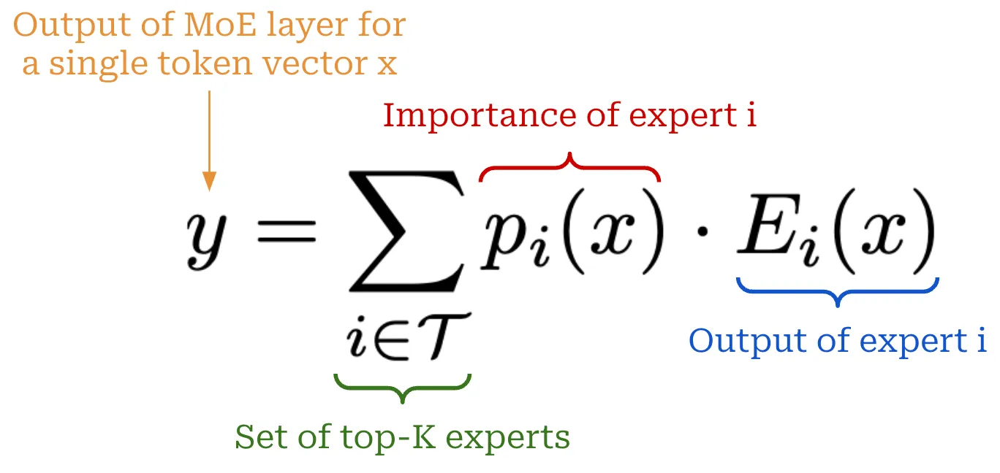
Total vs Active Parameters
- Total / Sparse Parameters: The entire set of model parameters, including all available experts (both active and inactive).
- Active Parameters: The parameters actually triggered to process a single input token. This determines the compute cost (FLOPs) per token.
- Key Advantage: MoEs scale model capacity (Total) while maintaining the inference latency and training cost of a much smaller dense model (Active).
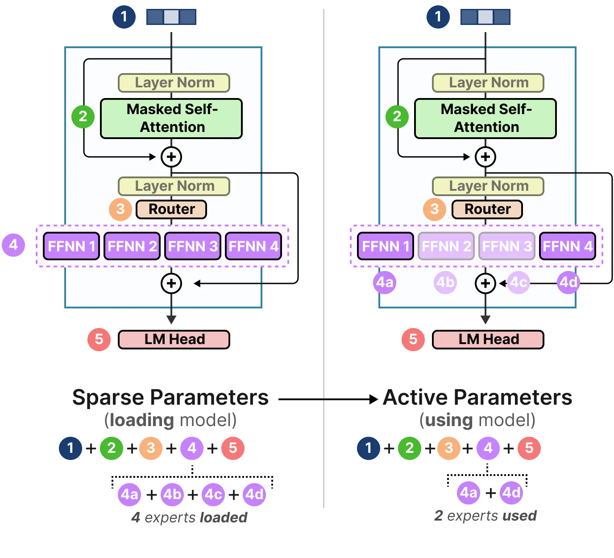
Total vs Active Parameters
Mixtral 8x7B MoE
- Total Parameters: ~46.7B
- Active Parameters: ~12.9B
- Configuration:
- 8 experts per layer
- Top-2 gating (\(K=2\) experts active per token)
- Parameter Sharing:
- Only the Feed-Forward Network (FFN) blocks are replicated.
- Shared components: Attention layers, LayerNorms, and Embeddings.
\[ \text{Active Params} = \text{Shared} + (K \times \text{Expert FFN}) \] \[ \text{Total Params} = \text{Shared} + (N \times \text{Expert FFN}) \]
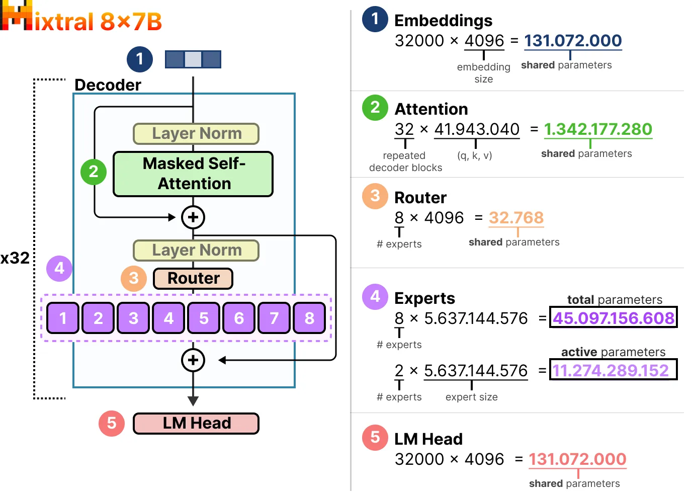
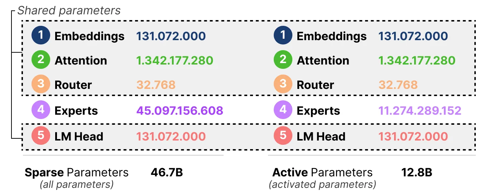
DeepSeek MoE
DeepSeek V2
- a 236 billion parameter MoE with 21 billion active parameters
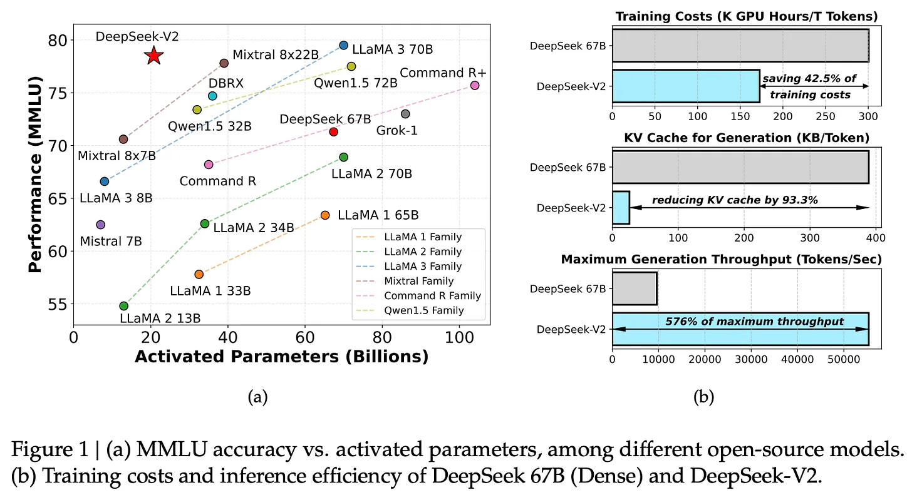
DeepSeek V3
- a 671B parameter MoE with 37B active parameters
DeepSeek V3 Architecture
- Sparse Activation: 671B total parameters, only 37B active per token
- Shared + Routed Experts: 256 fine-grained routed experts, 8 activated per token, plus 1 shared expert that sees every token (9 experts run per token)
- Multi-Head Latent Attention (MLA): Compresses KV cache into latent space, synergizes with sparse MoE for efficient inference
- Multi-Token Prediction: Jointly optimizes predicting multiple tokens in parallel for improved training signal and throughput
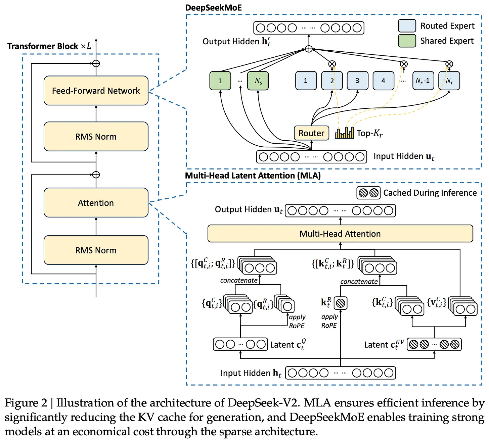
Qwen 3 MoE
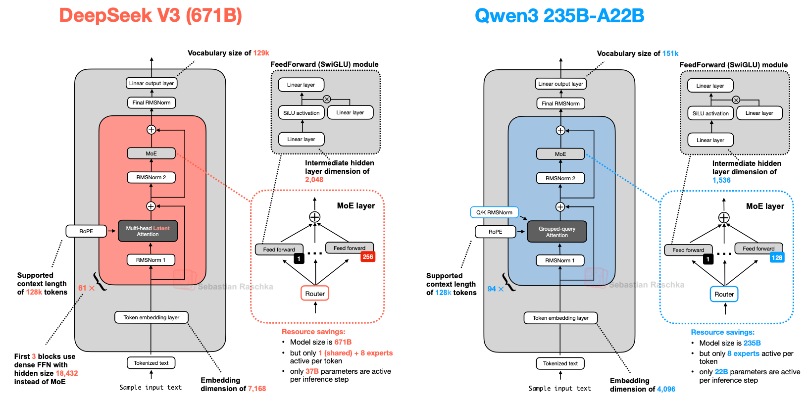
Kimi K2 / Thinking
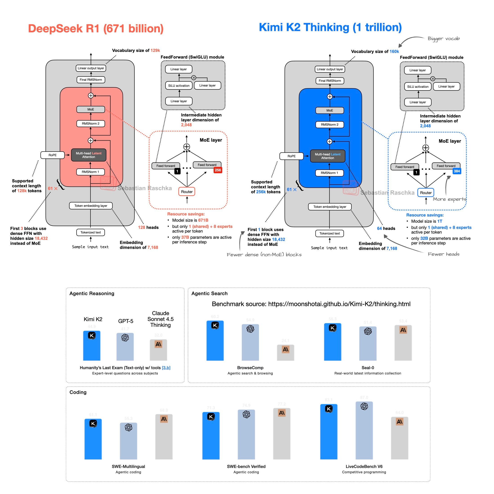
Sarvam 30B and 105
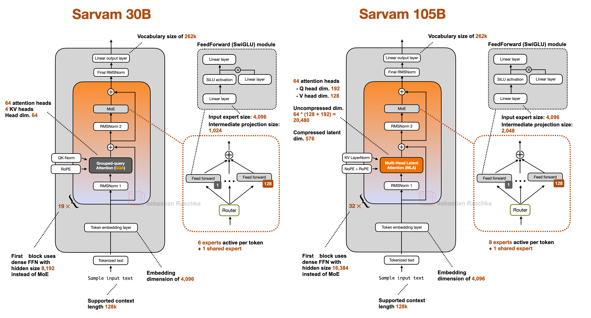
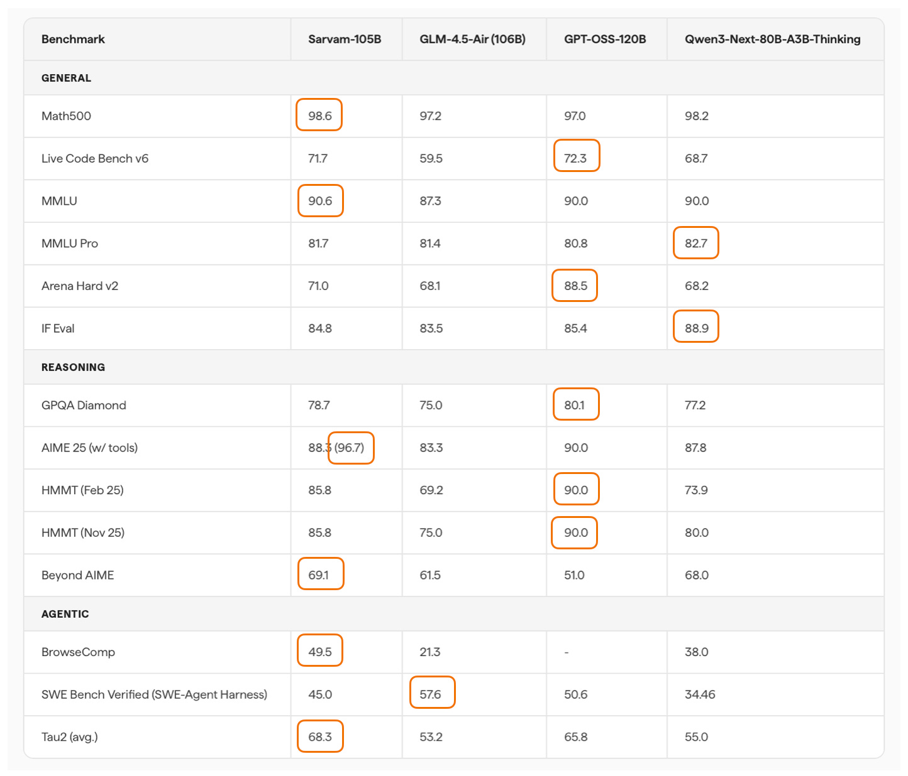